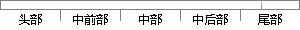

创建2个任务分别打印自己的优先级号，并休眠1秒，代码如下：
片段位置图

相似结果
相似片段：线程本身也会由于IO、任务执行结束休眠等原因,自己... 如何在创建线程的时候设置优先级呢?能贴点代码吗 ...有可能2个任务共同一个优先级吗 对我有用[0] ...
| 标题 | 《windows中任务就是线程吗?线程有优先级吗?创建线程的时候能设置...》 |
| 对比库 | PaperRater云论文库 |
| 网址 | http://bbs.csdn.net/topics/380148068 |
| 相似率 | 65.22% （轻度抄袭） |
※ 片段修改建议 ※
近似词参考：- 创建：建立 创立
- 自己：本身
- 如下：以下
- 分别：别离 划分 离别
- 任务：使命 义务
系统自动生成语句：建立2个使命别离打印本身的优先级号，并休眠1秒，代码以下：
注：本片段修改建议为系统自动生成，仅供参考。